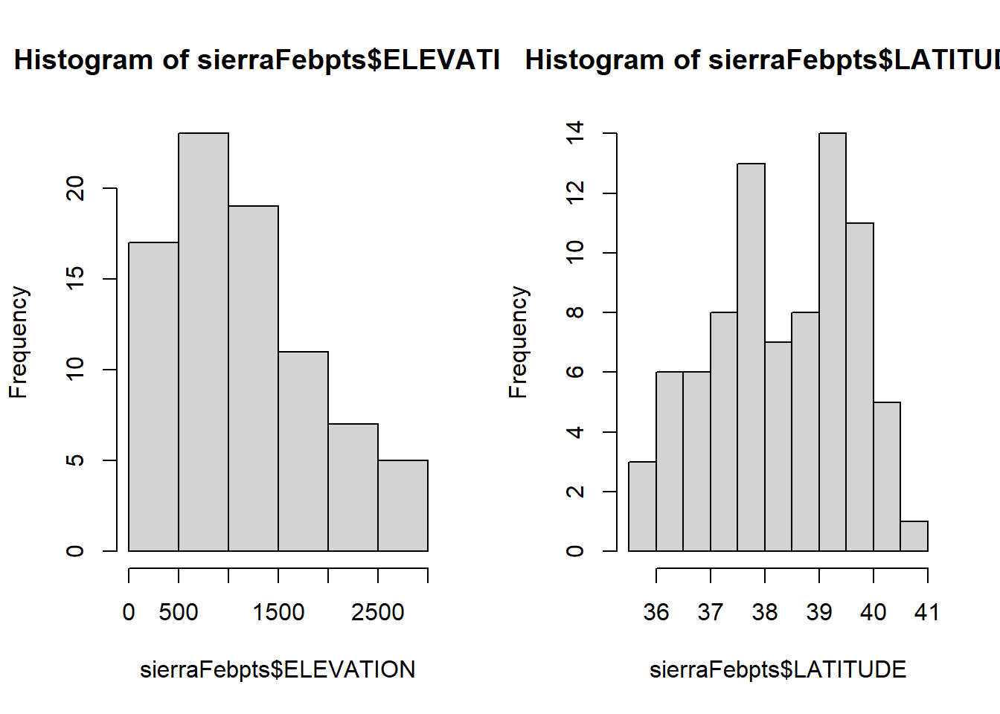

6 tmap visual variables
tmap is an R package for spatial data visualization. This vignette describes the alpha version of the major update (version 4), which will be on CRAN soon (fall 2024?).
6.0.1 tmap 4 - tmap 3.x
tmap 3.x supports several map layer variables, for example
"col","size", and"shape"for thetm_symbols()map layer function. There will be many more of those variables in tmap 4. Besides the visual variables, so-called transformation variables also will be available. A transformation variable role is to change the spatial coordinates (for instance, to create a cartogram). A visual variable only changes the appearance of a spatial object, e.g. fill color or line width. You can find some examples of these variables below.Map layer arguments (e.g. the arguments of
tm_polygons()) are much better organized: for each visual/transformation variable, there are only four arguments. In case of the fill visual variable, these are:fill,fill.scale,fill.legendandfill.free, which respectively specify the data variable or visual value that defines the polygon fill color, the used scaling function, the legend layout, and whether scales are applied freely across facets.The input for each visual/transformation variable can be multivariate, in the sense that multiple data variables are scaled to one transformation of visual variable. An example is a bivariate choropleth, in which a cross tabulation of two data variables is mapped to one (bivariate) color palette.
User-defined map layer functions can be written (e.g. as an extension package).
Like tmap 3.x, tmap 4.0 comes with two modes, a
"plot"and a"view"mode. However, other modes can be added as well, so you may expect an extension package tmap.rayshader at some point (or start writing one yourself).Legends and other map components (such as scale bars) can be drawn anywhere on or outside the map.
The layout of legends has been improved and made much more flexible.
It is possible to combine legends, which is useful if the same data variable is applied for multiple visual variables using the same scaling function.
6.0.2 tmap 4 - ggplot2
The tmap package is very similar to ggplot2 and its Grammar of Graphics, but tailored to spatial data visualization, whereas ggplot2 is much more general. More specifically:
In tmap, the visual/transformation variables are always specifies in the map layer functions, whereas in ggplot2 the aesthetics are usually specified at plot level.
In ggplot2, scales are determined on plot level, whereas in tmap, they are determined on map layer level.
In tmap, spatial data (e.g. an
sfobject) is specified withtm_shape(). The spatial coordinates (xandy) are considered to be part of the data (which can be changed with transformation variables). In principle, any map layer function can be used with any spatial class. E.g.tm_dots()renders dots forsfpoints data, but it also works for other spatial classes: e.g. centroids forsfpolygons/lines and raster data (stars / terra packages). However, inggplot2::ggplot(), each spatial class requires a custom map layer function, e.g.ggplot2::geom_sf()forsfobjects.tmap has a static plot mode and an interactive mode.
…
6.0.3 tmap 4 - other R packages
There are several great R packages for spatial data visualization, including: ggplot2, mapview, leaflet, mapsf, and the generic plot function.
The interactive "view" mode of tmap is similar to mapview in the sense that it uses the same building blocks (packages like leaflet, leafsync, and leafgl).
Colors are important for data visualization. For this purpose, tmap uses cols4all, a new R package to analyse color palettes, and check their color-blind-friendliness and other properties.
6.1 Map layers
A (thematic) map consists of one or more map layers. Each map layer has a specific set of variables that determine how the objects of that layer are drawn. We distinguish two type of variables: transformation variables and visual variables. A transformation variable is used to change the spatial coordinates (for instance, a cartogram which distorts polygons). A visual variable only changes the appearance of a spatial object, e.g. fill color or line width.
Transformation variables will only be used for specific map layers such as the cartogram, whereas visual variables will used in almost all map layers.
6.2 Visual variables
A visual variable describes a certain visual property of a drawn object, such as color, size, shape, line width, line stroke, transparency, fill pattern (in ggplot2 these are called aesthetics). A visual variable can be specified using a constant value (e.g. fill = "blue") or be data-driven (more on this later). If it can only be specified with a constant value, it is called a visual constant.
The following table shows which visual variables are used in standard map layers.
| Map layer | Visual variables | Visual constant |
|---|---|---|
tm_basemap() |
none | alpha |
tm_polygons() |
fill (fill color), col (border color), lwd (border line width) lty (border line type), fill_alpha (fill transparency), col_alpha (border color transparency) |
linejoin (line join) and lineend (line end) |
tm_symbols() |
fill (fill color), col (border color), size, shape, lwd (border line width) lty (border line type), fill_alpha fill transparency, col_alpha border color transparency |
linejoin (line join) and lineend (line end) |
tm_lines() |
col (color), lwd (line width) lty (line type), alpha transparency |
linejoin (line join) and lineend (line end) |
tm_raster() |
col (color), alpha (transparency) |
|
tm_text() |
size, col |
New in tmap 4.0 is that users can write their own custom map layer functions; more on this in another vignette. Important for now is that map layers and their visual variables can be extended if needed.
6.2.1 Constant visual values
The following code draws gold country polygons.

All the visual variables mentioned in the previous table are used, but with constant values. For instance, polygon borders are drawn with width lwd and colored with col. Each of these visual variables has a default value, in case of the border width and color respectively 1 and "black". The only visual variable for which we have specified a different value is fill, which we have set to "gold".
For those who are completely new to tmap: the function tm_shape() specifies the spatial data object, which can be any spatial data object from the packages sf, stars, terra, sp, and raster. The subsequent map layer functions (stacked with the + operator) specify how this spatial data is visualized.
In the next example we have three layers: a basemap from OpenTopoMap, country polygon boundaries, and dots for metropolitan areas:
if (requireNamespace("maptiles")) {
tm_basemap(server = "OpenTopoMap", zoom = 2, alpha = 0.5) +
tm_shape(World, bbox = sf::st_bbox(c(xmin = -180, xmax = 180, ymin = -86, ymax = 86))) +
tm_polygons(fill = NA, col = "black") +
tm_shape(metro) +
tm_symbols(size = 0.1, col = "red") +
tm_layout(inner.margins = rep(0, 4))
}## Loading required namespace: maptiles
Each visual variable argument can also be specified with a data variable (e.g., a column name). What happens in that case is that the values of data variable are mapped to values of the corresponding visual variable.

In this example, life expectancy per country is shown, or to put it more precisely: the data variable life expectancy is mapped to the visual variable polygon fill.
To understand this data mapping, consider the following schematic dataset:
## geom x1 vv1
## 1 polygon1 72 blue6
## 2 polygon2 58 blue3
## 3 polygon3 52 blue2
## 4 polygon4 73 blue7
## 5 ... ... ...The first column contains spatial geometries (in this case polygons, but they can also be points, lines, and raster tiles). The second column is the data variable that we would like to show. The third column contains the visual values, in this case colors.
Important to note is that there are many ways to scale data values to visual values. In this example data values are put into 5 year intervals and a sequential discrete blue scale is used to show these. With the tm_scale_*() family of functions, users are free to create other scales.
tm_shape(World) +
tm_polygons("life_exp", fill.scale = tm_scale_continuous(values = "-carto.earth"), fill.legend = tm_legend("Life\nExpectancy"))
This map uses a continuous color scale with colors from CARTO. More on scales later.
6.3 Transformation variables
Besides visual variables, map layer may use spatial transformation variables.
if (requireNamespace("cartogram")) {
tm_shape(World, crs = 8857) +
tm_cartogram(size = "pop_est", fill = "income_grp")
}## Loading required namespace: cartogram## Cartogram in progress...
We used two variables: size to deform the polygons using a continuous cartogram and fill to color the polygons.
The former is an example of a transformation variable. In our example schematic dataset:
## geom x1 x_scaled geom_transformed
## 1 polygon1 491,775 0.0007 polygon1'
## 2 polygon2 2,231,503 0.0033 polygon2'
## 3 polygon3 34,859,364 0.0554 polygon3'
## 4 polygon4 4,320,748 0.0067 polygon4'
## 5 ... ... ... ...The data variable x1, in the example pop_est (population estimation), is scaled to x1_scaled which is in this case a normalization using a continuous scale. Next, the geometries are distorted such that the areas are proportional to x1_scaled (as much as the cartogram algorithm is able to achieve).
6.4 Scales
Each visual variable and each transformation variable can be scaled with one of the tm_scale_ functions. To illustrate the different options, we show life expectancy across Africa, which we round in order to use the categorical scales as well.
Like tmap 3.x, it is possible to create facets by specifying multiple data variable names and scales to one visual (or transformation) variable, in this case "fill":
tm_shape(Africa) +
tm_polygons(rep("life_exp", 6),
fill.scale = list(tm_scale_categorical(),
tm_scale_ordinal(),
tm_scale_intervals(),
tm_scale_continuous(),
tm_scale_continuous_log(),
tm_scale_discrete()),
fill.legend = tm_legend(title = "", position = tm_pos_in("left", "top"))) +
tm_layout(panel.labels = c("tm_scale_categorical", "tm_scale_ordinal", "tm_scale_intervals", "tm_scale_continuous", "tm_scale_continuous_log", "tm_scale_discrete"),
inner.margins = c(0.05, 0.4, 0.1, 0.05),
legend.text.size = 0.5)
Both tm_scale_categorical() and tm_scale_ordinal() tread data as categorical data, so ignoring the fact that they are actually numbers. The only difference is that categorical does not assume any order between the categories, whereas ordinal does. This is similar to a factor in R which can be ordered or not.
The other shown scales can only be applied to numeric data. Note that in this example the breaks of tm_scale_intervals() are similar to the tick marks of tm_scale_continous(). However, when using class intervals only a few colors are used (in this case 6 plus a color for missing values) whereas in a continuous scale a gradient of colors is used. The advantage of using class intervals is that it is relatively easy to read data values from the map, e.g. the value of South Africa is 55 to 60, while the advantage of using a continuous color scale is that the colors in the map are more accurate (because they are unrounded).
For tm_scale_intervals() it is possible to chose how to determine the breaks (with the argument style). For tm_scale_continous() it is possible to use a transformation function: in this case the built-in log transformation is used (which is pretty useless for this particular example because of the data range).
Finally, tm_scale_discrete() uses a discrete linear scale. Note that this is different than tm_scale_ordinal(), which does not use colors for values that are not present (as categories), for instance 53.
Each tm_scale_*() functions can (in principle) be applied to any visual or transformation variable. Note that this is different from ggplot2 where scales are organized by variable and by type (e.g. ggplot2::scale_fill_continuous()). This is related to another difference with ggplot2. In tmap, the scales are set directly in the map layer function to the target visual/transformation variable, for instance tm_polygons(fill = "x", fill.scale = tm_scale_continuous()). In ggplot(), scales are set outside the layer functions.
Each tm_scale_ function has (at least) the following arguments: values, values.repeat, values.range, values.scale, value.na, value.null, value.neutral, labels, label.na, label.null, and label.format.
The value* arguments determine the visual values to which the data values are mapped. In case the scale is applied to a visual variable that represents color, they takes color values or a color palette. However, if for instance the same scale is applied to line width, then values should be numeric values that represent line widths.
This is illustrated in the following example:
tm_shape(World) +
tm_polygons(fill = "HPI", fill.scale = tm_scale_intervals(values = "scico.roma", value.na = "grey95", breaks = c(12,20,30,45))) +
tm_symbols(size = "HPI", size.scale = tm_scale_intervals(values = c(0.3,0.5, 0.8), value.na = 0.1, breaks = c(12,20,30,45)), col = "grey30")
The defaults for those value.* arguments are stored in the tmap options. For instance
## $seq
## [1] "hcl.blues3"
##
## $div
## [1] "pu_gn_div"
##
## $unord
## [1] "tol.muted"
##
## $ord
## [1] "hcl.blues3"
##
## $cyc
## [1] "tol.rainbow_pu_rd"
##
## $biv
## [1] "pu_gn_bivs"contains the default color palettes for the visual variable "fill" for different types of data. For instance, when data values are all positive numbers, and tm_scale_intervals() or tm_scale_continuous() is applied, the default color palette is "hcl.blues3", as can be seen in the examples above.
Regarding the available color palettes: tmap uses the new R package cols4all which contains a large number of well-known color palettes.
Please run cols4all::c4a_gui() which starts an interactive tool (the successor of tmaptools::palette_explorer()).
Of course, also own color palettes can be loaded directly via a vector of color codes.